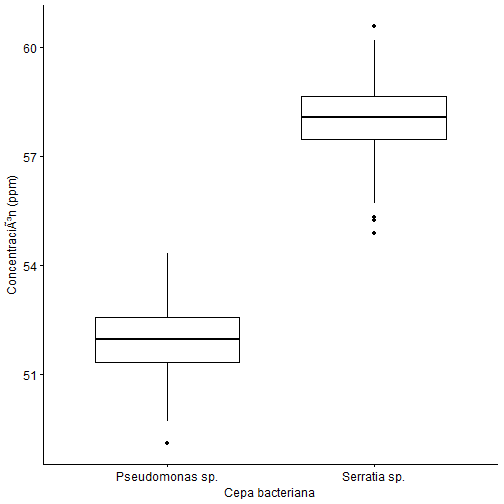
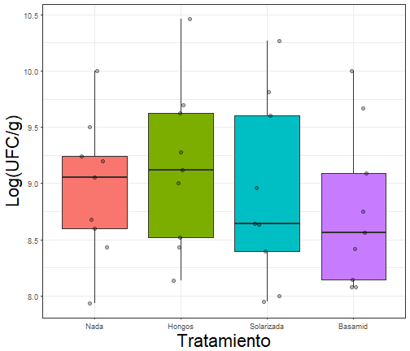
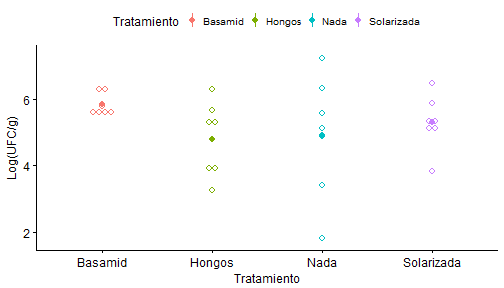
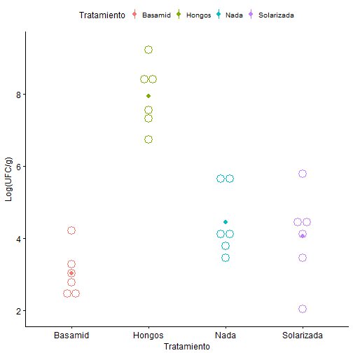
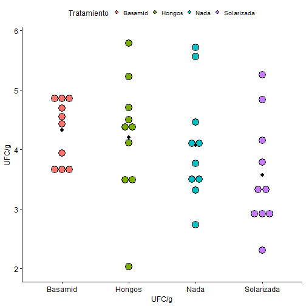
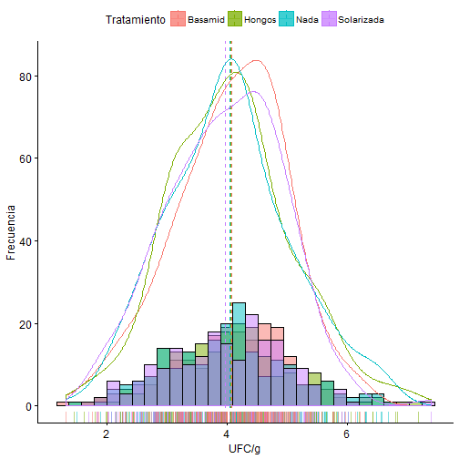

Análisis de Varianza
Diseño de Experimentos
Carlos Neftaly Lozano A., Msc
www.microbiostats.com
Introducción
ANOVA unifactorial o de una vía

ANOVA unifactorial: Cuantitativa vs. categórica
Se refiere a una clase de muestreo o diseños experimentales, en los cuales la variable predictora o explicativa es categórica y la variable respuesta es continua.

ANOVA unifactorial
Se fundamenta en la descomposición de la variación de una variable respuesta \(\bar{Y}\), entre la varainza explicada y no explicada por uno o varios factores.

ANOVA unifactorial: Objetivo
El ANOVA tiene como objetivos centrales:
Examinar la contribución relativa de cada una de las fuentes de variación, a la variabilidad total de \(\bar{y}\).
Probar la hipótesis nula \((H_0)\), que la media de los grupos o tratamientos son iguales.
ANOVA: Una perspectiva gráfica
Cuando analizamos los datos usando análisis de varianza, el primer paso es poner a prueba la hipótesis nula global:
\[ H_0: \mu_1 = \mu_2 = \mu_3= .. \mu_I\] contra
\[ H_a: \text{al menos una media difiere} \]

ANOVA
- Comparamos la variación dentro de cada grupo con la obtenidad entre cada grupo para evaluar si existen diferencias significativas en las medias poblacionales.
- Por lo tanto, al comparar estas dos medidas de varianza entre sí, podemos detectar si hay verdaderas diferencias entre las medias de la población.
ANOVA: Comparando varianzas
Si la varianza entre grupos es mucho mayor que la dentro de los grupos:

ANOVA: Comparando varianzas
Si la varianza entre grupos es mucho mayor que la dentro de los grupos:

ANOVA: Comparando varianzas
Si la varianza entre grupos es similar a la dentro de los grupos:

ANOVA: Notación
- \(N\): número total de observaciones.
- \(i\): número de grupos.
- \(\bar{y}\): media general 'gran media'.
Cada grupo \(i\) tiene:
+ $n_i$: número de observaciones en el grupo $i$.
+ $y_{ij}$ = observación _j_ en el grupo _i_
+ $\bar{y}_i$: media del grupo $i$.
+ $s_i$: Desviación de estándar en el grupo $i$.
ANOVA: Particionando la varianza....
El ANOVA está construido sobre el concepto de partición de la suma de cuadrados. La variación total en un conjunto de datos puede ser expresada como suma de cuadarados (SS): La diferencia entre cada observación \((Y_i)\) y la gran media de los datos (\(\bar{Y}\)) elevado al cuadrado y sumado.
\[\underbrace{Y_{ij}}_{Respuesta} = \underbrace{\bar{\mu}}_{\text{Media global}} + \underbrace{\tau_i}_{\text{Efecto del tto}} + \underbrace{e_{ij}}_{\text{Error aleatorio}} \]
\[ SS_{total}= SS_{factor}+ SS_{error} \]
ANOVA: Suma de cuadrados totales
\[SS_{total}=\sum_{i=1}^{a} \sum_{j=1}^{n} (Y_{ij} - \bar{Y})^2 \]
Siendo, \(i\) = 1 hasta a tratamientos ; \(j\)= 1 hasta n réplicas.
Refleja la desviación de cada observación de la 'gran media'.
ANOVA: Suma de cuadrados entre grupos
\[SS_{factor}=\sum_{i=1}^{a} \sum_{j=1}^{n} (\bar{Y}_{i} - \bar{Y})^2 \]
Representa la diferencia entre las medias de cada grupo o tratamiento con respcto a la media global.

ANOVA: Suma de cuadrados dentro de grupos
\[SS_{error}=\sum_{i=1}^{a} \sum_{j=1}^{n} (\bar{Y_{ij}} - \bar{Y_i})^2 \]
Representa el error aleatorio o variación residual.

ANOVA: Tabla ANOVA

ANOVA: Tabla ANOVA
| Df | Sum Sq | Mean Sq | F value | Pr(>F) | |
|---|---|---|---|---|---|
| Tratamiento | 3 | 2520.128 | 840.043 | 849.073 | 0 |
| Residuals | 796 | 787.534 | 0.989 | NA | NA |